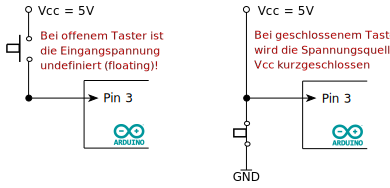
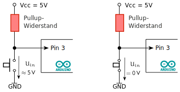
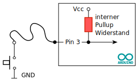
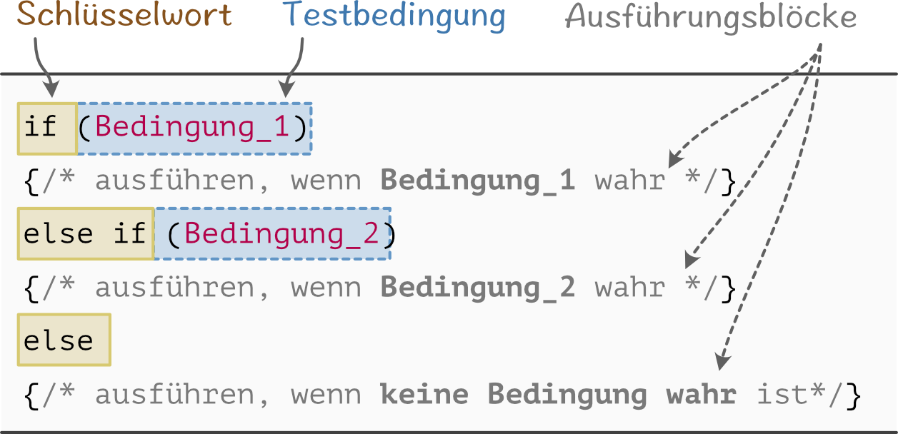
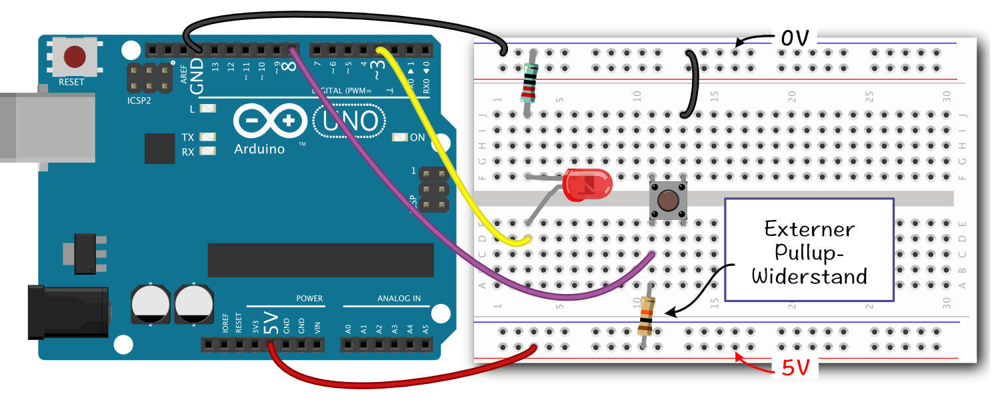

Den Arduino mit einem Taster steuern
Im folgenden Programmbeispiel werden digitale Signale eingelesen. Hierzu soll ein Taster über den digitalen Pin 3 mit dem Arduino verbunden und eine LED gesteuert werden.
Einen Taster direkt anschließen

Die einfachste Möglichkeit, einen Taster anzuschließen, wäre, ihn direkt mit einer Spannungsquelle (Vcc) und einem Arduino-Pin zu verbinden (Abb. links). Ein digitaler Arduino-Pin, welcher als Input konfiguriert ist, weist einen sehr hohen Innenwiderstand ($ 100 \text{ M}\Omega$) auf. Wird der Taster nun gedrückt, so würde die gesamte Spannung am Eingangspin abfallen. In unserem Beispiel also ca. 5V am Pin 3.
Ist der Taster jedoch offen, so wäre das Potential am Eingangspin unbestimmt oder auch schwebend (engl.: floating) und nicht, wie man annehmen könnte, null. In Abhängigkeit von der Umgebung (z.B. eine Hand, die sich der Schaltung nähert) ändert sich die anliegende Spannung, und der Zustand des Pins ist unvorhersehbar (HIGH oder LOW).
Um das zu ändern, müsste der Pin außerdem mit der Masse verbunden werden. In der rechten Abbildung ist genau das geschehen, nur mit dem Unterschied, dass der Taster zwischen dem Pin und der Masse liegt. Ist der Taster offen, wäre alles in Ordnung (am Pin liegen dann Vcc = 5V). Problematisch wird es aber, wenn der Taster gedrückt wird. Dann entsteht ein Kurzschluss zwischen Vcc und GND, was unbedingt vermieden werden sollte.
Taster mit Pullup-Widerstand anschließen

Zum Verhindern eines Kurzschlusses beim Schließen des Tasters wird zwischen Vcc und dem Taster ein Widerstand eingefügt. Ist der Taster offen, wird die Eingangsspannung des Pins auf die angeschlossene Spannung Vcc hochgezogen, ohne dass es einen Kurzschluss gibt. Daher auch der Name Pullup-Widerstand. Ist der Taster geschlossen, so ist der Pin direkt mit der Masse verbunden und die Spannung beträgt 0V.
Geeignete Werte für eine Pullup-Widerstand sind $R_\text{up} = 10 k\Omega\ \cdots 50 k\Omega $
Interner Pull-Up Widerstand

Alternativ zu einem externen Pullup-Widerstand, der extra in die Schaltung eingefügt werden muss, gibt es beim Arduino auch die Möglichkeit, einen internen Pullup-Widerstand zu konfigurieren.
#define TASTER_PIN 3
pinMode(TASTER_PIN, INPUT); // Pin als Eingang definieren
digitalWrite(TASTER_PIN, HIGH); // Pullup-Widerstand des Pins einschalten
Alternativ kann der Pullup-Widerstand auch direkt eingeschaltet werden:
#define TASTER_PIN 3
pinMode(TASTER_PIN, INPUT_PULLUP); // Pin als Eingang mitPullup-Widerstand konfigurieren
Wird ein Taster ohne Pullup- oder Pulldown-Widerstand an den Arduino angeschlossen, so ist der Spannungszustand des Taster-Pins nicht stabil und der Zustand des Eingangspins kann sich zufällig ändern.
Die if Verzweigung - Eine bedingte Anweisung
Hat man den Status eines Tasters eingelesen, möchte man in aller Regel den weiteren Programmablauf vom Tasterzustand abhängig machen. Hierfür eignet sich die if Verzweigung als bedingte Anweisung.

Nach dem Schlüsselwort if folgt in Klammern eine Bedingung. Diese Bedingung kann zum Beispiel ein Vergleich zahl==1 oder zahl>1 sein. Ist die Bedingung wahr, also true, dann wird der in geschweiften Klammern { ... } stehende Code ausgeführt.
int zahl = 6;
if( zahl > 6 )
{
Serial.println("Die Zahl ist größer als 6.");
}
if ... else if ... else
Oft kommt es aber vor, dass in einem Programm viele verschiedene Verzweigungen benötigt werden, wobei für jede einzelne Verzweigung eine Bedingung benötigt wird. Hierfür stehen die Schlüsselwört else if und else zur Verfügung.

Ist die Bedingung einer if Anweisung nicht erfüllt, so wird als nächstes überprüft, ob eine else if Anweisung gegeben ist und ob deren Bedingung erfüllt ist. In einer if Verzweigung können beliebig viele else if Anweisungen angegeben werden, welche alle nacheinander abgearbeitet werden.
Mit dem abschließenden Schlüsselwort else können Anweisungen für den Fall angegeben werden, dass keine der bei if oder else if angegebenen Bedingungen wahr ist.
int zahl = 6;
if( zahl < 6 )
{
Serial.println("Die Zahl ist kleiner als 6.");
}
else if( (zahl >= 6) && (zahl <= 10)) // Bedingung können mit && als logisches UND verknüpft werden
{
Serial.println("Die Zahl liegt zwischen 6 und 10.");
}
else // ohne Bedingung
{
Serial.println("Die Zahl ist größer als 10.");
}
Sobald eine Bedingung in einer
if ... else ifVerzweigung erfüllt ist, wird der zugehörige Code ausgeführt. Weitere, noch nicht überprüfte Bedingungen werden ignoriert und nicht mehr überprüft.
Einfaches Taster-Beispiel
Im folgenden Beispiel soll exemplarisch der Zustand eines Tasters vom Arduino eingelesen werden. Ist der Taster gedrückt, soll eine angeschlossene LED aufleuchten, ist er nicht gedrückt, soll nichts passieren.
Schaltung

Programm
/* Einfaches Beispiel zum Einlesen des Tasterzustandes (externer Pullup-Widerstand) */
# define PIN_LED 8 // Pin LED
# define PIN_TASTER 3 // Pin Taster
int zustandTaster = 0; // Speichert den aktuellen Zustand des Tasters
void setup() {
pinMode(PIN_LED, OUTPUT); // Pin als Ausgang definieren
pinMode(PIN_TASTER, INPUT); // Pin als Eingang definieren
}
void loop() {
zustandTaster = digitalRead(PIN_TASTER); // Tasterzustand einlesen
// Prüfen des Tasterzustandes; wenn gedrückt (LOW), dann ...
if (zustandTaster == LOW) {
digitalWrite(PIN_LED, HIGH); // LED anschalten
} else {
digitalWrite(PIN_LED, LOW); // ansonsten LED ausschalten
}
}
Neue Befehle
pinMode(pin,INPUT)konfiguriert den angegebenen Pin am Arduino als Eingang.digitalWrite(pin,{HIGH/LOW})aktiviert (HIGH) bzw. deaktiviert (LOW) den Pullup-Widerstand, wenn der Pin als Eingang definiert ist.zustandTaster = digitalRead(pin)liest den digitalen Zustand eines Pins ein und gibt entsprechend dem Zustand als RückgabewertLOWoderHIGHzurück.
Aufgaben
- Ein Taster ist mit einem Pullup-Widerstand mit dem Arduino verbunden. Welches Level (HIGH oder LOW) liegt am Arduino an, wenn der Taster offen bzw. geschlossen ist?
- Ändern Sie die obige Beispielschaltung und nutzen Sie anstelle des externen, einen internen Pullup-Widerstand. Ändern Sie hierfür auch den Programmcode.
- Ändern Sie die obige Beispielschaltung (ohne Änderung im Programmcode) so, dass die LED beim Drücken des Tasters ausgeschaltet wird. Sie also leuchtet, wenn der Taster nicht gedrückt ist. Bauen sie die Schaltung auf und dokumentieren Sie diese z.B. mit Fritzing.
- Ändern sie das gegebene Programm so, dass beim Drücken des Tasters eine angeschlossene LED blinkt (1 Sekunde an, 1 Sekunde aus). Verhält sich ihr Programm, wie Sie es erwarten?
- Bauen Sie eine Schaltung mit zwei LEDs und zwei Tastern auf. Schreiben Sie anschließend ein Programm mit folgenden Eigenschaften:
- Die erst LED leuchtet, wenn der Taster 1 gedrückt ist.
- Die zweite LED leuchtet, wenn der Taster 2 gedrückt ist.
- Beide LEDs leuchten, wenn beide Taster gedrückt sind.
- Verwenden Sie nur eine
if ... else if ... elseVerzweigung.
Ein Taster zum Umschalten
Wird mit einem Taster eine LED gesteuert, so sollte die LED beim ersten Drücken des Tasters angehen und beim zweiten Drücken wieder ausgehen. Anstatt also die LED einfach anzuschalten, wenn der Taster gedrückt ist, muss sich das System den Zustand der LED und des Tasters merken und entsprechend den Zustand der LED ändern.
/* Unvollständiger Code für eine tastergesteuerte LED */
#define TASTER 3 // Taster-Pin mit Pull-UP Widerst. (LOW = gedrückt)
#define LED 13 // an Schaltung anpassen
int statusLED = LOW;
int statusTaster = HIGH; // aktueller Status des Taster
int statusTasterLetzter = HIGH; // Status des Tasters beim letzten loop() Durchlauf
void setup(){
/* - TASTER mit Pull-UP-Widerstand konfigurieren
- LED konfigurieren
- serielle Schnittstelle konfigurieren */
} // END setup()
void loop(){
statusTaster = digitalRead(TASTER); // Taster-Pin einlesen
/*
WENN (Status des Tasters geändert){
WENN (Taster gedrückt){
Status der LED ändern
}
}
*/
statusTasterLetzter = statusTaster; // aktualisieren des letzten Tasterstatus
digitalWrite(LED,statusLED);
} // END loop()
Aufgaben
- Lesen Sie den unvollständigen Programmcode für eine tastergesteuerte LED sorgfältig durch und ergänzen Sie die fehlenden Programmteile. Sollte sich die LED nicht verhalten wie gewünscht, nutzen Sie die serielle Schnittstelle zum Debuggen.
- Fügen Sie in Ihr Programm eine Zählvariable ein, welche bei jedem Betätigen des Tasters um eins erhöht wird. Geben Sie den Wert der Zählvariable über die serielle Schnittstelle auf dem PC aus. Nutzen Sie für die serielle Schnittstelle eine hohe Baudrate (115.200 baud).